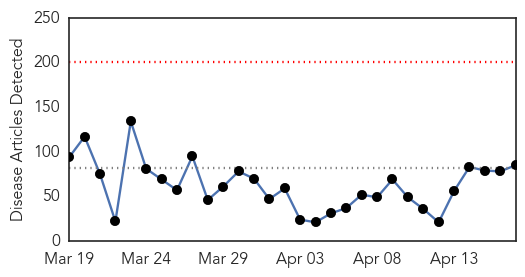
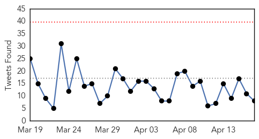
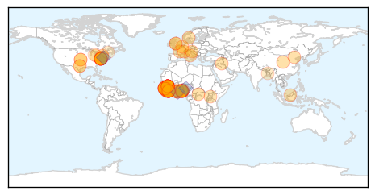
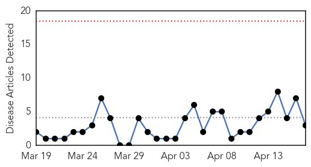
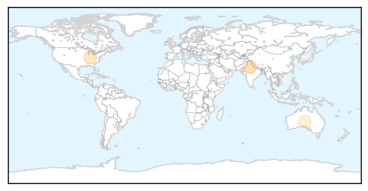

Ebola
30-Day Web Trend
0 alerts, 0 warnings

30-Day Twitter Trend
0 alerts, 0 warnings

Article Locations
Article Confidences

Top Articles:
- 1.000
- Top UN Officials Warn of Ebola's Stubborn Persistence in West Africa
- 1.000
- Ebola Virus Found In Survivor's Semen 6 Months After Negative Blood Test
- 1.000
- 16 U.S. Citizens Exposed to Ebola Virus Disease Show No Symptoms After Observation
- 1.000
- Ebola Fight Enters Final Lap, UN and Obama Warn Against Complacency
- 0.999
- Obama sees prevention as goal now
- 0.999
- WHO Warns Ebola Survivors on 'Safe Sex’
- 0.999
- :: Penn involved in ongoing Ebola efforts
- 0.999
- Fighting Ebola & infectious diseases with apps
- 0.999
- On Ebola Response and Recovery, World Bank and Partners Keep Pressure On - Sierra Leone
- 0.999
- Liberia: MSF hands over ELWA 3 to the Liberian Ministry of Health - Liberia
- 0.999
- Ebola outbreak still real – WHO warns Ghana
- 0.998
- Lutherans send aid package to Africa
- 0.998
- WHO official says Ebola remains threat to Ghana
- 0.998
- WHO official says Ebola remains threat to Ghana - Xinhua
- 0.998
- The Effects of West Africa’s Ebola Outbreak Are Still Far From Resolved
- 0.997
- Worst hit Ebola African countries make remarkable recovery
- 0.997
- Ebola-hit African countries move into early recovery after "dramatic progress": WHO chief
- 0.997
- Worse Than Ebola? Mysterious, Blindness-Inducing Illness Claims 14 Lives In Nigerian State Of Ondo
- 0.997
- Nigeria Hit With Mysterious Epidemic In Ondo State, More Deadly Than Ebola
- 0.996
- The condition of the patient suspected of having Ebola is stable
- 0.995
- Guinea finds nine new Ebola cases near border with Sierra Leone
- 0.995
- Guinea Finds 9 New Ebola Cases Near Sierra Leone Border
- 0.995
- Ebola-hit Liberia rebuilds devastated child healthcare system
- 0.994
- As Ebola Cases Dwindle, West Africa Turns To Economic Recovery
- 0.994
- World Bank boosts recovery for Ebola outbreak nations
- 0.993
- Strange disease ravages Ondo community; 28 dead
- 0.992
- As Ebola Cases Dwindle, West Africa Turns To Economic Recovery
- 0.991
- Ebola researchers take new look at risk of sexual transmission;
- 0.991
- As Ebola Cases Dwindle, West Africa Turns To Economic Recovery
- 0.988
- Ebola: World Bank Group Provides New Financing to Help Guinea, Liberia and Sierra Leone Recover from Ebola Emergency
- 0.988
- World Bank Boosts Aid to Ebola-affected Nations
- 0.987
- Sierra Leone News: Salone must build a robust post-Ebola health system -Dr. Dong « Awoko Newspaper
- 0.986
- Russian financial input in Ebola virus containment tops $60 million
- 0.985
- Article not found
- 0.980
- Bravo to the US for Supporting Africa’s Own Center for Disease Control
- 0.980
- Panic as strange disease hits Ondo, kills 14
- 0.980
- Progress in fighting Ebola must be followed by long-term recovery efforts
- 0.978
- Sierra Leonean president looking past Ebola to broad national recovery
- 0.977
- Turning the Page on Ebola
- 0.977
- 'Dramatic' Progress In Fighting Ebola Must Be Followed By Long-Term Recovery Efforts
- 0.970
- US$650 million pledged to fight Ebola outbreak
- 0.968
- Sierra Leone: 'Dramatic' progress in fighting Ebola must be followed by long-term recovery efforts
- 0.966
- Rebuilding after Ebola will require the world’s help
- 0.963
- Houston scientist hatches plan to prevent next Ebola
- 0.962
- Strange Disease in Ondo, over 14 Dead – Daily Times Nigerian Newspaper
- 0.960
- Strange disease kills 14 in Ondo community
- 0.957
- UNMEER Lauds School Reopening; says Sierra Leone set to end Ebola
- 0.955
- Free media helps beat down Ebola in Sierra Leone
- 0.950
- World Bank assists Guinea, Liberia and Sierra Leone
- 0.949
- 14 die in Ondo as Commissioner links strange illness to exhumed corpse
Showing top 50 articles...
Top Tweets:
- 0.898
- 'Exhausted' Liberia struggles with long Ebola 'to do' list - Reuters http://t.co/R1iXy4D9ib ebola EVD
- 0.892
- Chief of Ebola Mission says Sierra Leone on the right track to defeating Ebola. https://t.co/0FgTlKgrjf … EbolaResponse
- 0.864
- Penn involved in ongoing Ebola efforts - The Daily Pennsylvanian http://t.co/XldH4oS2ne ebola EVD
- 0.853
- Ebola-hit countries call for $8 bn for 'Marshall Plan' - Yahoo News http://t.co/9dApK3VuhK ebola EVD
- 0.806
- Today's news pouch avianflu avianinfluenza Ebola EbolaResponse MERS http://t.co/ciMoVSbdLQ
- 0.782
- Because the Ebola fight isn't over http://t.co/Fxqh7hYpcw KickingEbolaOutOfWestAfrica
- 0.752
- RT: LIVE NOW: Min of Health closing statements: From Ebola to More Resilient Health Systems http://t.co/F7i8EA9cnW
- 0.724
- RT: The Ebola epidemic is proceeding, & we need to move quickly before the rainy season. — @DavidNabarro (@UN) EbolaRecovery
- 0.707
- TackleEbola Q&A with Gabrielle Fitzgerald, Director of Ebola Program, on innovation to fight Ebola http://t.co/TnyvdGpmcP
- 0.697
- Canada's chief public health officer heads to West Africa to assess the Ebola response efforts: http://t.co/x7o8Br2Zyd AfricaAgainstEbola
- 0.677
- Summary on the Ebola Recovery Plan: Liberia http://t.co/0yU0YqcWLu
- 0.656
- Brain tumors may be new targets of Ebola-like virus - Medical Xpress http://t.co/Z314fQ6amG
- 0.653
- Ebola: Tackling the epidemic across country borders http://t.co/lXKExDzqv3
- 0.626
- Special Coverage: Ebola in West Africa - 4-2015, Monitoring Mobile Labs are required to protect Health Workers! http://t.co/8r4mJyF0Zx
- 0.623
- Group Provides New Financing to Help Guinea, Liberia and Sierra Leone Recover from Ebola recovery http://t.co/f52t6rhwJo
- 0.585
- CDC announces smartphone coaching app for Ebola workers - http://t.co/472Kj3MJqa http://t.co/hob37iBfVL ebola EVD
- 0.578
- View footage of roundtable w/ leaders from Guinea, Liberia & Sierra Leone discussing Ebola recovery plans http://t.co/S3exR9uCHt
- 0.572
- High School Students Write To Thank Ebola Workers And Get Unexpectedly ... - Huffington Post http://t.co/UB6Hqd5QT0 ebola EVD
- 0.559
- Summary on the Ebola Recovery Plan: Guinea http://t.co/IiPb6MGIll
- 0.548
- Synthetic pot blamed for death of US soldier deployed to Ebola zone - CBS News http://t.co/MclPhVoNwA ebola EVD
- 0.536
- Ebola has had a devastating effect on Sierra Leone's economy [Audio]:... http://t.co/VaLPCry9Z7
- 0.519
- RT: Even if Ebola is not totally under control yet, it is urgent to restore reproductive, maternal & newborn health services EbolaR…
Hepatitis
30-Day Web Trend
0 alerts, 0 warnings

30-Day Twitter Trend
0 alerts, 0 warnings

Article Locations
Article Confidences

Top Articles:
Top Tweets:
-
No tweets found for Apr 17, 2015